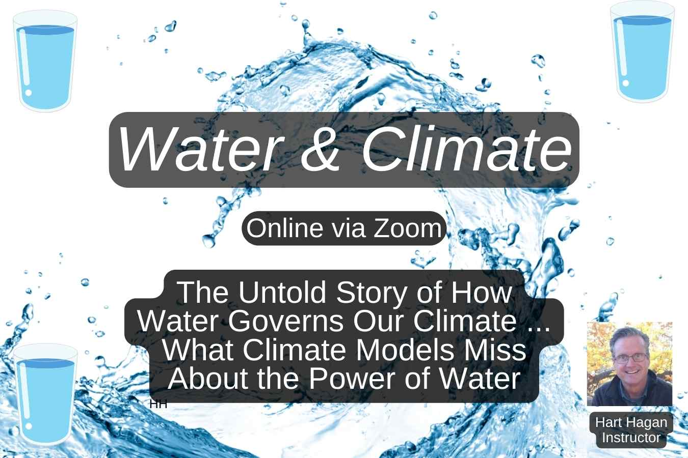

Water & Climate: The Untold Story

Date: Monday, May 18 — 7:00–8:30 PM (Eastern Time)
Water may be the most overlooked force shaping our climate. While climate discussions often focus on carbon and greenhouse gases, the movement of water through ecosystems plays a central role in regulating temperature, driving rainfall, and stabilizing climate systems.
In this webinar we will explore how water cycles through forests, farms, wetlands, and soils — and how those ecosystems actively cool the climate through evaporation and transpiration.
When ecosystems function properly, they store water in soils and vegetation, moderate temperatures, reduce extreme heat, and help generate rainfall. When ecosystems are degraded, these water cycles break down, leading to increased flooding, drought, and climate instability.
Understanding the relationship between water and climate gives us practical ways to address climate change locally — by restoring soils, forests, wetlands, and living landscapes.
What You Will Learn
- How evaporating water cools the surrounding environment
- How water-rich ecosystems regulate temperature and prevent extremes
- How healthy soil and vegetation store large quantities of water
- How functioning ecosystems reduce both flooding and drought
- How farms and landscapes can thrive largely on rainfall rather than irrigation
Why This Topic Matters
Understanding water cycles helps explain how plants and trees cool our climate through evaporation. It also reveals why forests and wetlands are essential climate infrastructure.
By improving soil health and restoring ecosystems, we can store more water in landscapes, stabilize rainfall patterns, reduce flooding, and make agriculture more resilient.
Learning how water flows through ecosystems gives communities powerful tools to address climate change locally while also improving food security and water availability.
Who Should Attend
Anyone interested in climate solutions, water cycles, forest protection, agriculture, or understanding how ecosystems regulate climate.
Recording
A recording will be available to everyone who registers.